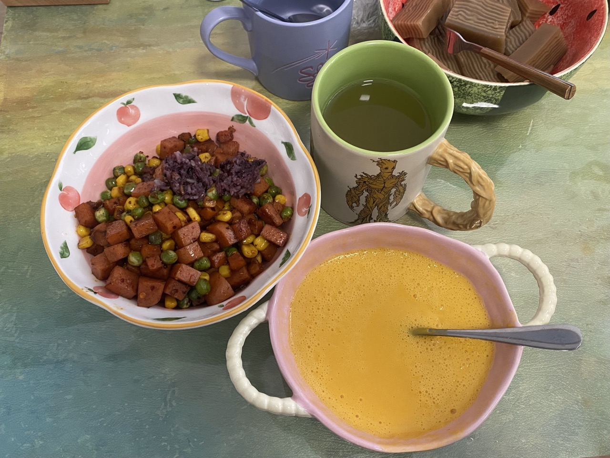
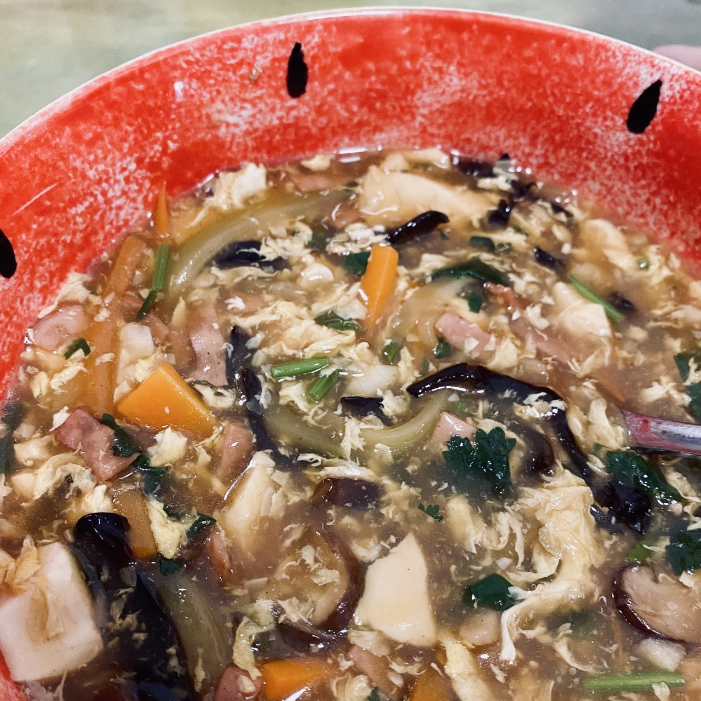
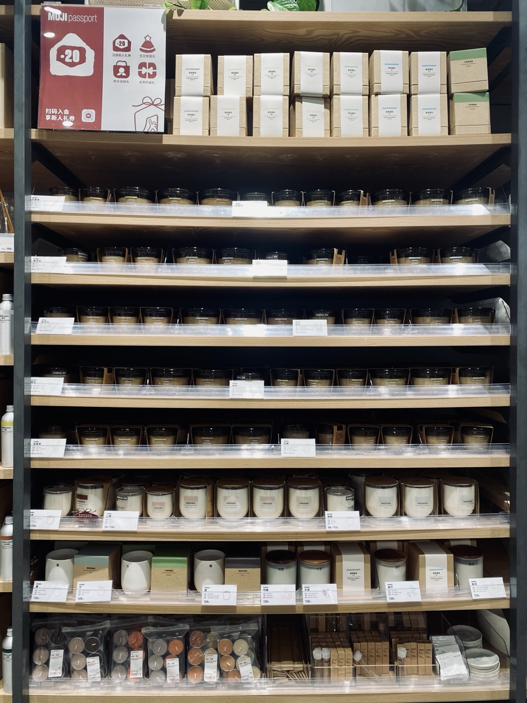
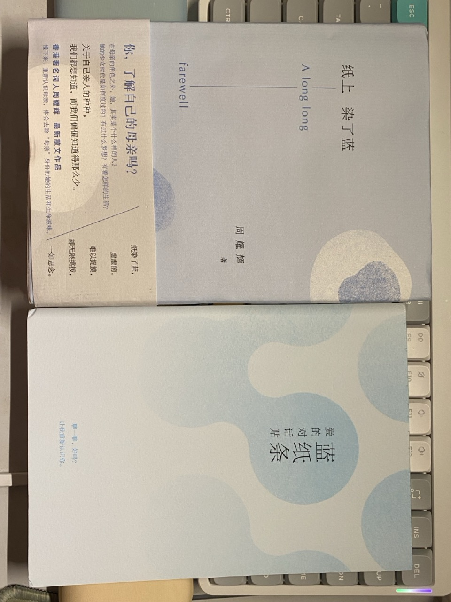
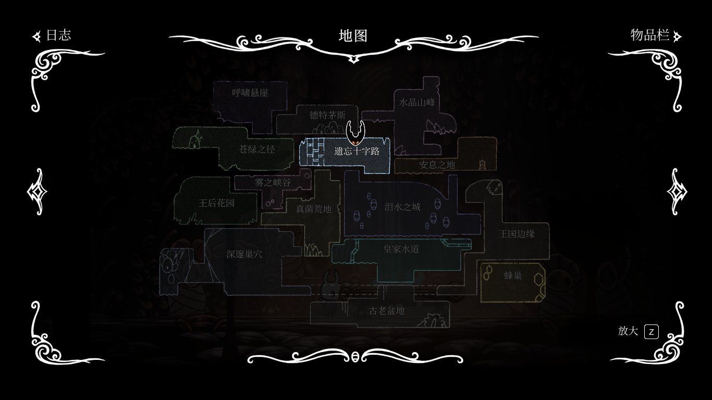

日常#3
身上的红点、南瓜汤、胡辣汤、猪扒饭、纸上染了蓝、空洞骑士
最近女朋友身上多了些像是痘痘一样的红点，看起来不是痘痘，身上不同地方都有出现。
比较担心去医院检查了一下，说是可能是一些虫子咬的，让我们把床和沙发之类的，抖动和晒一下，开了一个止痒的要和抗生素，回家再观察一阵看看。
本来我身上是没有的，但隔天我也长了一个，看起来像女朋友之前长过的一个肿块。
当时说是 疥，是毛囊炎的一种，样子是中间有一个脓点，脓点周围扩散一圈一元硬币大小的红肿，说是会自行消除，不行后面也去医院看看。
可能是熬夜多，运动少，导致抵抗力比较差，所以容易感染。
我们也怀疑是不是被子床单啥的不干净，一度想买个除螨仪，但看了看除螨仪的主要功能其实就是吸走表面的皮屑、螨虫等，达到一个除螨的作用，那些紫外线、高温啥的，操作时间不够其实用处也不大，思来想去还不如每周洗一次床单被套。
{kind=link}

南瓜汤
南瓜汤做法有很多，有的会加小米、大米等让它更浓稠一些，不过我喜欢一个更简单的办法，味道也还行。
南瓜切成小块或小片，然后放锅里蒸软，水烧开后开始蒸，大概十分钟左右，具体可以用筷子啥的戳戳看，软了就行。
南瓜削皮就用刀切掉表面的皮就好了，南瓜的皮很硬，削皮刀不好用，直接用刀切最快。
蒸好南瓜丢进榨汁机，加一些牛奶，然后搅拌一阵，加点盐或糖就好了。
估摸着牛奶的量，不要太多，多了就不那么粘稠了。牛奶可能是冷的，搅拌出来不够热就放微波炉再加热一下。
{kind=link}

胡辣汤
我做的估计不是正宗的胡辣汤，是类似胡辣汤的大乱炖。
- 准备一些自己喜欢的食材：胡萝卜、西葫芦、木耳、香菇、火腿、豆腐、香菜等，然后将它们切丝、切丁、切块。（准备食材是最花时间的）
- 拍点蒜，油热下锅，把蒜炒香后，加入各种食材翻炒一下，一方面炒香一点，一方面也稍微炒熟一点。
感觉那些食材有些变软，看起来有点变熟了，就开始调味，加入一勺蚝油，三勺生抽，一点点老抽上点色，一点点醋，再翻炒均匀。
我不太清楚醋的作用是什么，做好之后我吃不出来酸味。可能是增香？不加大概也没啥关系。
- 加清水（可能要没过食材或者更多，这个取决于食材的分量），盖上锅盖，焖煮 5 分钟左右。期间打三四个鸡蛋，搅拌成蛋液；用大量的淀粉，加清水，变成一碗水淀粉。
- 水淀粉分多次加入，淀粉的作用是勾芡，让水变得粘稠，因为水比较多，需要的水淀粉也会比较多。但是多少合适并不知道，所以可以分多次加，加到粘稠程度满意为止。
- 蛋液画圈注入，形成细碎的蛋花，再加入香菜，搅拌均匀。
- 加入少许香油，以及大量的白胡椒粉，搅拌均匀即可。
做一次胡辣汤基本够两个人吃一顿还有剩下，米饭都可以不用做，也就是备菜有点麻烦。
跑步的时候听了 Nice Try 的 我们都尝试了一道新菜，里头说到深圳有一个好吃的猪扒饭 ⸺ 大家乐的一哥猪扒饭 ⸺ 听主播说的似乎很好吃。
之前也稍微看了点 一饭封神，里面也有个港式猪排饭，看起来很好吃，既然深圳有好吃的猪扒饭，就想着去试试。
找了一家最近的，周六中午和女朋友一起去，也是好久没去比较远的地方吃饭了。
去到大家乐，人不是很多，其实就是一家普通的快餐店。点了一哥猪扒饭，上来之后并没有感受到主播说的，冲鼻而来的香气，焗饭也是预制加热过来的。猪扒倒是不柴，但也说不上很好吃，反正我不会再专门坐几十分钟地铁过来吃。
吃完顺便去商场逛了逛，逛了一家服装店，衣服还蛮好看的，放的音乐我也挺喜欢。
很多店里都会放一些音乐，但大多给我的感觉是，他们只是需要有声音，所以才要放一些歌，但不在意放什么歌。我觉得是可以花些精力去做一份歌单的，可以营造一些氛围，不过我也不知道怎么挑选一份合适的歌单。
逛累了去瑞幸点了饮料，正好看到了播客里提到的饮料 ⸺ 羽衣甘蓝 ⸺ 点了一杯，味道还不错，有点甜。
{kind=link}

之后还去了趟无印良品，在香薰蜡烛区挑了杯茉莉花香的。
像是香薰，香水之类的，还是线下买更好，可以闻到味道后再做决定，网上买，尽管写了前后调，但味道是很难想象得到的。
不过香薰蜡烛燃烧前后的味道也是不同的，没烧之前的味道觉得好闻，烧起来了也未必就是自己喜欢的味道1。
《豆汁记》看了，只看了豆汁记那一篇，文笔我喜欢。
{kind=link}

坐地铁的时候，把《紙上染了藍》也看完了，这本书篇幅比较短，作者是写歌词的，文章里很多句子都有一种歌词的美感。
《紙上染了藍》是关于作者对母亲的回忆，没有很长的叙事，都是从一些片段中想起他的阿妈，点到即止，蛮喜欢的，或许后续会整理 一些摘抄 出来。
{kind=link}

空闲的时候继续在空洞骑士探索，找到了电车通行证，去到了安息之地，获得了梦之钉，可以用来打亡魂，也可以打 NPC，打 NPC 能听到它们内心的真实想法，挺有趣的设定。
安息之地还有一个墓地，似乎是之前来圣巢的各种虫子，也都是些厉害的角色，算是我的前辈了吧。
第一个亡魂说，其他亡魂都是我罩着，你要敢打它们我就弄死你，你尊重它们我也尊重你。
都这么说了，我就打了她试试，确实有点东西，我现在是打不过。
试着打了其他亡魂，还是第一个亡魂出来打死我，而被我打的其他亡魂都灰飞烟灭了，有点后悔，还是想没事过来看看前辈们的，听听他们说的话。
乱走又去到了螳螂村，见到了螳螂村的三个大哥，打了好几次才打过，打完之后，所有螳螂都对我鞠躬，都不打我了，也是挺有意思的，看来是我获得了它们的认可，以后来这里至少不用被打了。
之后又到处跑，试着往德特茅斯（出生地）的左边走，现在我有了爬墙跳，终于可以过去了，发现了呼啸悬崖，但没有地图，也没有找到椅子，后面再来探索了。
还跑到了水晶山峰，同样也是没有地图和椅子，跑了半天，掉下去发现下面就是安息之地。
把三个守护着中的一个解决了，遗忘十字路出现了感染，很多路口过不去了，怪还会自曝，难受呀。
游戏还是很好玩的，喜欢这种探索的乐趣。